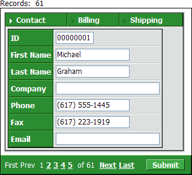
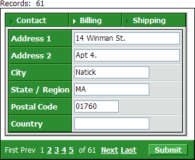
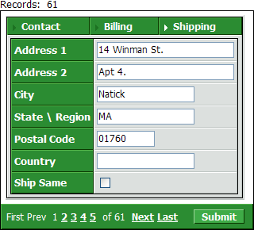
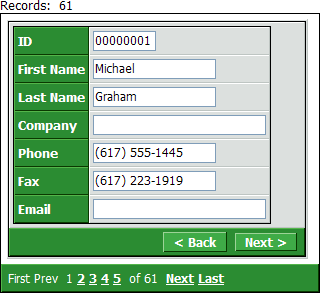
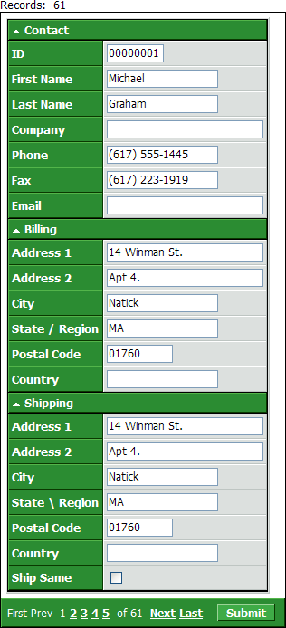
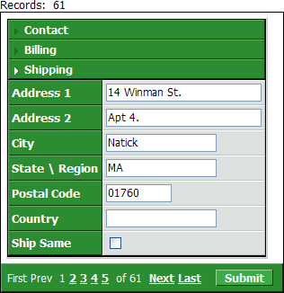

Creating Tab Controls on a Grid
Dialog components, grid components with columnar formats, and grid detail view parts may use tabs to divide content between multiple "pages". For example, the following grid is based on a view that combines the Invoice_Header, Invoice_Items, and Product tables from the AlphaSports database. The fields from the different tables are placed on different tabs. The following three pictures show one way of displaying these tabs.

Tab One: The Invoices tab contains fields from the Invoice_Header table.

Tab Two: The Invoice Items tab contains fields from the Invoice_Items table. Note that the width stays the same. The design could also force the height to stay the same.

Tab Three: The Product tab contains fields from the Product table. Only one tab is displayed at a time.
Another style of tabbing is know as "Genie Style". The user uses the < Back and Next > buttons to view different tabs.

Genie Style tabbing.
A third style of tabbing is called "Bands". In this case a tab page may be hidden by clicking on its header. This style is the same as used through the Grid Builder to show grid properties.

Band Style tabbing.
Single Band Style is the fourth way of displaying tabs. In this case only one of the bands will appear at a time. For example, selecting the Invoice Items tab below would automatically hide the Invoices tab.

Single Band Style tabbing.
Tabs can be added to:
columnar grid components
the detail forms of grid components
and dialog components
To define tabs on a columnar grid component or detail view form:
Display the Grid Fields or Detail View Fields page.
Click Insert Layout Command... , which appears below the Available Fields list.
Select "Tab Control" and click OK.
In the Available Fields list position the Tab Control entry above all fields that it will contain.
Click Insert Layout Command... , select "Tab Pane" and click OK.
Position the Tab Pane.1 entry below the Tab Control.1 but above all fields that it will contain.
Click Insert Layout Command... , select "Tab Pane" and click OK.
Position the Tab Pane.2 entry below the fields of Tab Pane.1 but above all fields that it will contain.
Repeat steps 7 and 8 for additional tab panes.
Select the Tab Control object in the Select Fields list.
Click
 or to display the HTML
Layout dialog.
or to display the HTML
Layout dialog.In the Type field select "Tabs", "Genie", "Bands", or "SingleBands".
Setting Tab Style Tab Control Properties
If you chose "Tabs" in step 12:
Select whether to place the tab controls on the "Top" or "Bottom" in the Tab Settings > Align field.
Optionally, in the Tab Settings > Inline Style field clickto display the <span class=Screen>Style Editor</span>. Here you can define HTML settings that will override the selected style sheet.
Optionally, set the width of the tab control in the Sizing > Width field. Otherwise, the size of the control will change as its contents change. The tab control will be left aligned within its frame.
Optionally, set the height of the tab control in the Sizing > Height field. The tab control will be vertically centered within its frame.
|
Type |
Options and Description |
|
Type |
Defines the style of the tab control. The options are:
with tmpl.field_infoN .TabLayout.LayoutType as C |
|
Tab Settings |
Options and Description |
|
Title |
Specifies the placement of the tab labels. The options are:
with tmpl.field_infoN .TabLayout.align as C |
|
Inline Style |
Overrides the style that is applied by the current style sheet. with tmpl.field_infoN .TabLayout.inlineStyle as C |
|
Sizing |
Options and Description |
|
Width |
Sets the width of the table cell that contains the tab control. with tmpl.field_infoN .TabLayout.width as C |
|
Height |
Sets the height of the table cell that contains the tab control. with tmpl.field_infoN .TabLayout.height as C |
Setting Genie Style Tab Control Properties
If you chose "Genie" in step 12:
Select whether the control will have a title.
Optionally, in the Genie Settings > Inline Style field click to display the <span class=Screen>Style Editor</span>. Here you can define HTML settings that will override the selected style sheet.
Optionally, change the tile of the "Previous" button in the Genie Settings > Previous button label field.
Optionally, change the tile of the "Next" button in the Genie Settings > Next button label field.
Optionally, set the width of the tab control in the Sizing > Width field. Otherwise, the size of the control will change as its contents change. The tab control will be left aligned within its frame.
Optionally, enable the progress bar in the Genie Settings > Progress Bar field. This device gives you a graphical view of which tab in the sequence of tabs that you are viewing.
If you enable the progress bar, additional properties will appear.
Select the progress bar style.
Optionally, change the size and style of the progress bar cells that represent unvisited panes.
Optionally, change the size and style of the progress bar cells that represent visited panes.
Optionally, set the height of the tab control in the Sizing > Height field. The tab control will be vertically centered within its frame.
|
Type |
Options and Description |
|
Type |
Defines the style of the tab control. The options are:
with tmpl.field_infoN .TabLayout.LayoutType as C |
|
Genie Settings |
Options and Description |
|
Title |
Specifies whether the tab control will have a title. with tmpl.field_infoN .TabLayout.title as L |
|
Inline Style |
Overrides the style that is applied by the current style sheet. with tmpl.field_infoN .TabLayout.inlineStyle as C |
|
Previous button label |
Defines the label of the Previous button. with tmpl.field_infoN .TabLayout.prev_label as C |
|
Next button label |
Defines the label of the Next button. with tmpl.field_infoN .TabLayout.next_label as C |
|
Progress bar |
Overrides the style that is applied by the current style sheet. with tmpl.field_infoN .TabLayout.progress as L |
|
Genie Progress Bar |
Options and Description |
|
Type |
This property only appears if Genie Settings > Progress Bar is checked. Defines the style of the progress bar, which shows which tab is active. The options are:
with tmpl.field_infoN .TabLayout.progressType as N |
|
Container Style |
This property only appears if Genie Settings > Progress Bar is checked. Defines the style of the background of the progress bar. with tmpl.field_infoN .TabLayout.progressBarStyle as C |
|
Marker On Style |
This property only appears if Genie Settings > Progress Bar is checked. Sets the size and style of the progress bar cell that represents a not yet visited tab pane. with tmpl.field_infoN .TabLayout.progressMarkerOnStyle as C |
|
Marker Off Style |
This property only appears if Genie Settings > Progress Bar is checked. Sets the size and style of the progress bar cell that represents a visited tab pane. with tmpl.field_infoN .TabLayout.progressMarkerOffStyle as C |
|
Sizing |
Options and Description |
|
Width |
Sets the width of the table cell that contains the tab control. with tmpl.field_infoN .TabLayout.width as C |
|
Height |
Sets the height of the table cell that contains the tab control. with tmpl.field_infoN .TabLayout.height as C |
Setting Bands Style Tab Control Properties
If you chose "Bands" or "SingleBands" in step 12:
Select whether to display tab separators in the Bands Settings > Separator field.
Optionally, set the width of the tab control in the Sizing > Width field. Otherwise, the size of the control will change as its contents change. The tab control will be left aligned within its frame.
|
Type |
Options and Description |
|
Type |
Defines the style of the tab control. The options are:
with tmpl.field_infoN .TabLayout.LayoutType as C |
|
Sizing |
Options and Description |
|
Width |
Sets the width of the table cell that contains the tab control. with tmpl.field_infoN .TabLayout.width as C |
See Also
Supported By
Alpha Five Version 7 and Above
Limitations
Web publishing applications only.